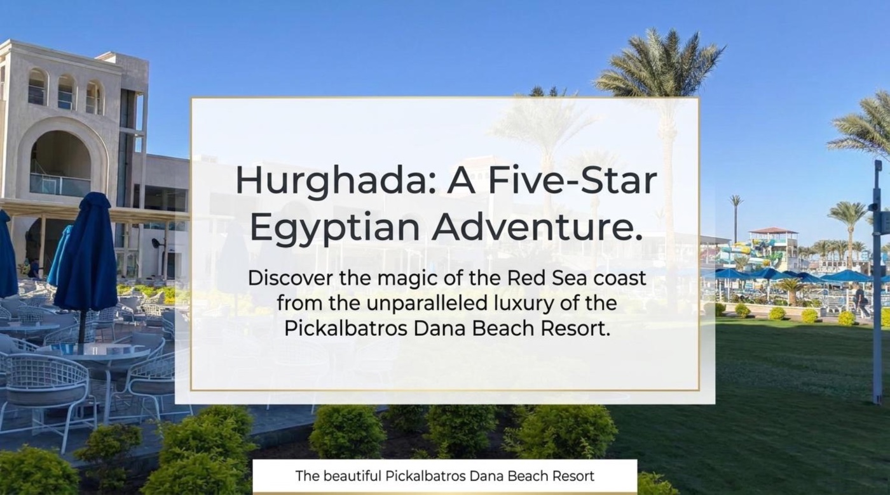
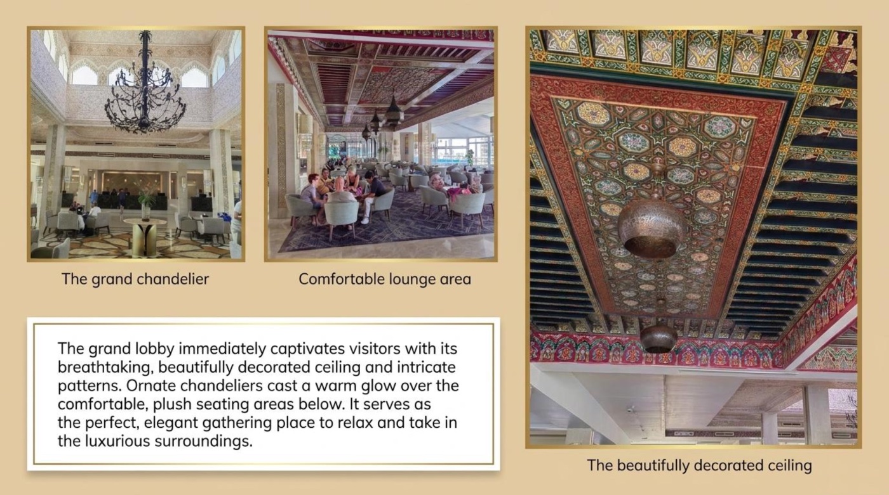
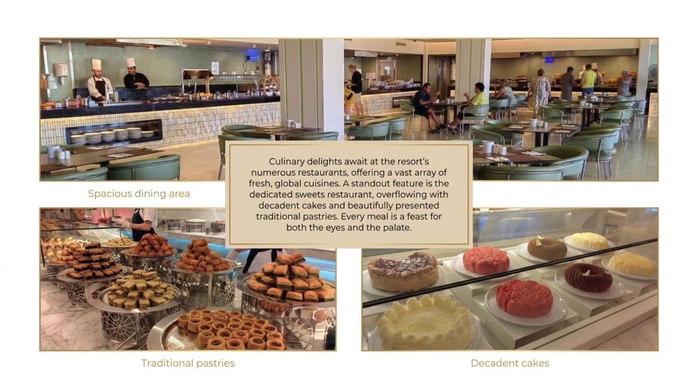
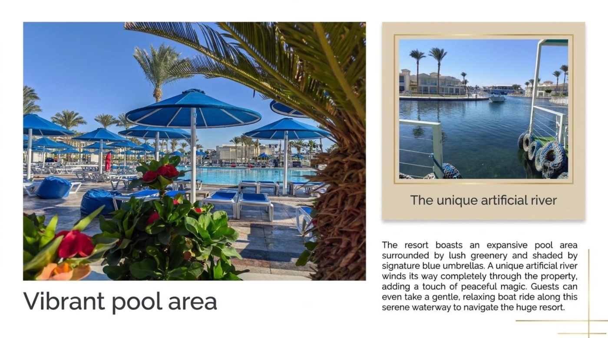
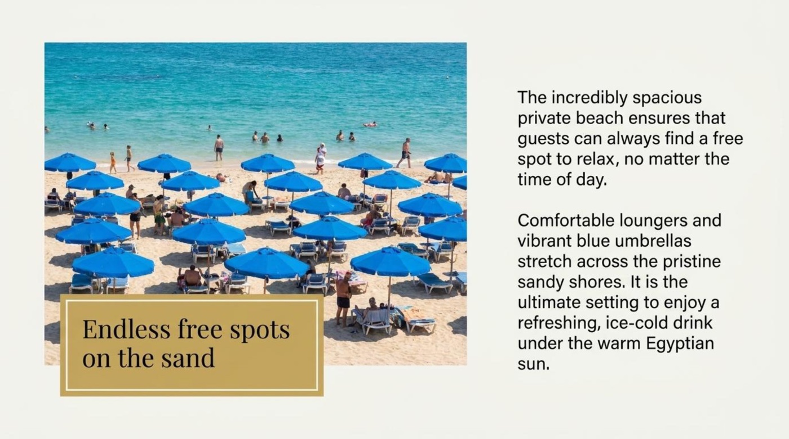
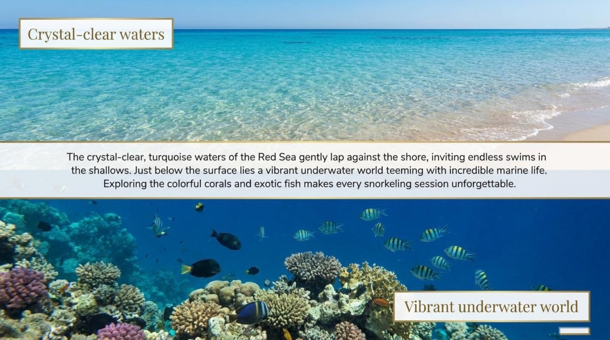
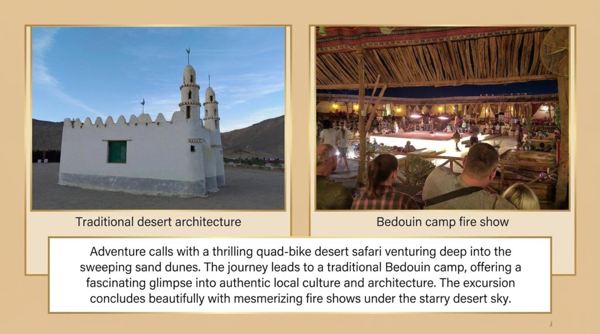
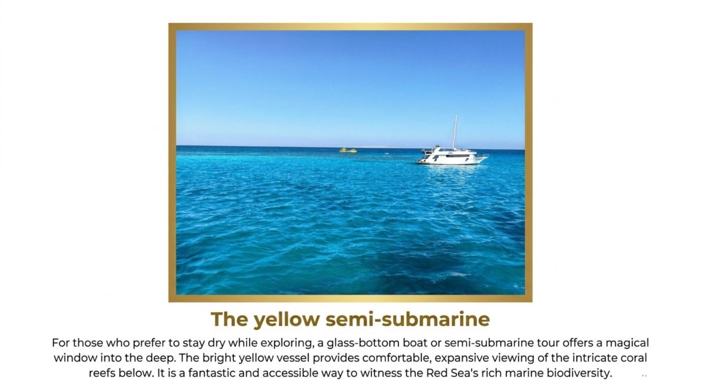
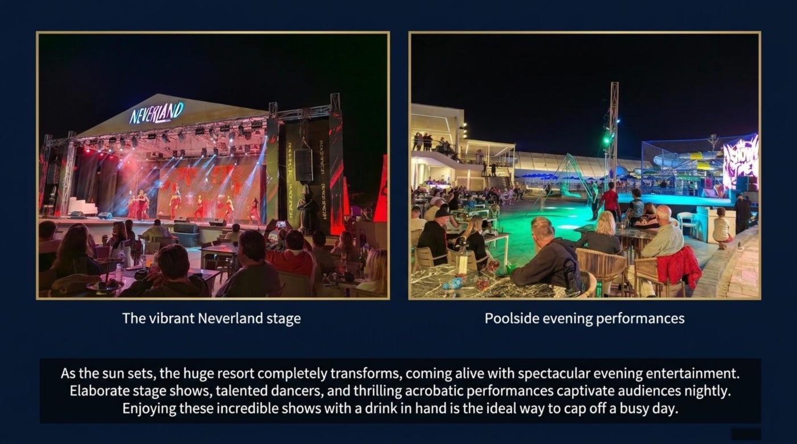
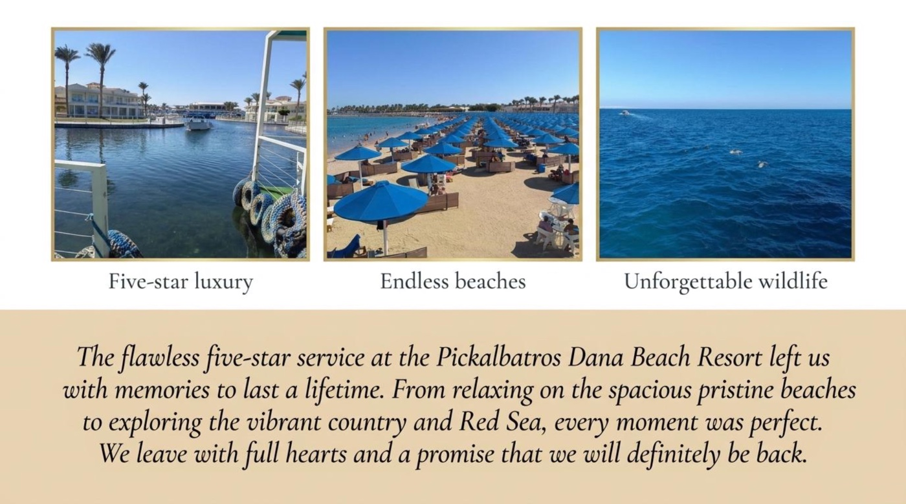

🎯 A quick, playful way to warm up before reading — the game opens in a new tab.
Hurghada: A Five-Star Egyptian Adventure — Learn Travel English from an AI-Crafted Red Sea Story
📚 A guided reading of the Gemini Notebook photo story about the Pickalbatros Dana Beach Resort — with vocabulary cards, term tooltips and a comprehension quiz built in.
Hurghada began its life as a quiet fishing village on the Egyptian shore of the Red Sea, and today it welcomes millions of travelers who come for the coral reefs, the desert and the year-round sunshine. The presentation behind this article captures that transformation from a visitor's point of view: fifteen picture panels that follow one stay at the Pickalbatros Dana Beach Resort, from the first glimpse of the palm-lined entrance to the last glowing sunset over the pools. Interestingly, the story was assembled with artificial intelligence — every panel carries the Gemini Notebook signature, which means an AI assistant wrote the captions from the traveler's own photographs.
That AI authorship is exactly what makes the material so valuable for English learners. The text is short, vivid and consistently well-structured, and it demonstrates how professional travel writing actually works: strong adjectives, sensory details, idiomatic phrasal verbs and one carefully chosen metaphor after another. This article walks through the story panel by panel, quotes its best lines, explains the vocabulary inside them, and turns the whole journey into an interactive reading lesson. By the end, the reader will hold a small toolkit of travel English that works for hotel reviews, holiday posts and everyday conversation alike.
📚 Section 1 · Content and Context — the Story Behind the Pictures
The presentation is, at its heart, a simple narrative in three acts: arrival, exploration and farewell. The AI narrator moves the reader from the resort gates to the lobby, from the restaurants to the pools, from the sea to the desert, and finally back to the resort at night. Pay attention to how each panel adds one new layer of description — the structure alone is a masterclass in organizing a travel story.
🏨 Arrival: an Immaculately Kept Paradise

The story opens with a promise: "Discover the magic of the Red Sea coast from the unparalleled luxury of the Pickalbatros Dana Beach Resort." The phrase unparalleled luxury sets the tone immediately, because it tells the reader that everything which follows will be described at the highest standard. Notice that the sentence does not simply list features; it invites the reader into an experience, which is the classic move of destination marketing.

The arrival paragraph delivers the first dense vocabulary moment of the whole story: "Arriving at the massive Pickalbatros Dana Beach Resort reveals an sprawling, immaculately kept paradise. The spacious rooms offer perfect comfort and a welcoming retreat after a long journey. Every architectural detail and manicured garden ensures a premium five-star experience from the very first moment." The verb reveals turns a simple arrival into a small dramatic moment, and the contrast between massive and immaculately kept shows that size has not come at the cost of order.
💡 Practical advice: the pattern adjective + adjective + noun ("immaculately kept, sprawling paradise") is one of the easiest ways to upgrade a plain sentence. Instead of writing "the hotel is big and clean," a learner can write "the hotel is an immaculately kept, sprawling paradise" and sound instantly more professional. A real-life example from the material shows the same technique in the room description: the AI narrator calls the rooms "a welcoming retreat after a long journey," pairing a physical fact with an emotional benefit.
🏛️ The Grand Lobby: a Lesson in Atmosphere

The lobby panel is pure atmosphere writing: "The grand lobby immediately captivates visitors with its breathtaking, beautifully decorated ceiling and intricate patterns. Ornate chandeliers cast a warm glow over the comfortable, plush seating areas below. It serves as the perfect, elegant gathering place to relax and take in the luxurious surroundings." Three things happen in quick succession here: the ceiling impresses, the light warms, and the furniture comforts. The AI narrator builds the scene layer by layer, exactly the way a professional hotel reviewer would.
📌 The verb phrase take in deserves special attention, because learners often miss it. It means to absorb a scene with all your senses, and it appears in countless travel texts. The photograph shows guests sitting back in the lounge with drinks, which illustrates the phrase perfectly — they are literally taking in the surroundings around them.
💡 Practical advice: when describing any impressive place, follow the narrator's order — ceiling and light first, then furniture, then people. That top-down structure keeps a description organized and prevents the reader from getting lost.
🍽️ Culinary Delights: a Feast for the Eyes and the Palate

The food panel contains one of the richest idioms in the whole story: "Culinary delights await at the resort's numerous restaurants, offering a vast array of fresh, global cuisines. A standout feature is the dedicated sweets restaurant, overflowing with decadent cakes and beautifully presented traditional pastries. Every meal is a feast for both the eyes and the palate." The idiom a feast for the eyes and the palate works on two levels: a feast is literally a large special meal, and here it also means that the food pleases the sight and the sense of taste at the same time.
Interestingly, the material highlights a detail that many guests consider the true highlight: the resort runs a dedicated sweets restaurant, a separate venue devoted entirely to cakes and pastries. The accompanying photographs show trays of golden pastries and glossy cakes lined up like jewelry in a display case. The word overflowing paints abundance more vividly than any number could, and a standout feature is a polished way to single out one detail from many.
💡 Practical advice: food reviews live and die by sensory adjectives. Collect phrases like culinary delights, a vast array of and beautifully presented — they transfer directly to restaurant reviews, food blogs and dinner-party small talk.
🌊 Water Everywhere: Pools, a River and a Private Beach

The pool panel introduces the resort's most distinctive feature: "The resort boasts an expansive pool area surrounded by lush greenery and shaded by signature blue umbrellas. A unique artificial river winds its way completely through the property, adding a touch of peaceful magic. Guests can even take a gentle, relaxing boat ride along this serene waterway to navigate the huge resort." The verb boasts is a small gem — in travel writing it means to proudly offer a feature, and it appears constantly in hotel descriptions. The phrase winds its way describes the river's slow, curving movement, and a touch of peaceful magic shows how a light metaphor can make an engineering feature feel romantic.

The beach panel answers the question every traveler silently asks — and answers it with reassurance rather than with numbers: "The incredibly spacious private beach ensures that guests can always find a free spot to relax, no matter the time of day. Comfortable loungers and vibrant blue umbrellas stretch across the pristine sandy shores. It is the ultimate setting to enjoy a refreshing, ice-cold drink under the warm Egyptian sun." The phrase no matter the time of day is a compact, elegant way to say "always," and the ultimate setting frames the beach as the best possible place for a simple pleasure.
💡 Practical advice: notice that the material never says "the beach is crowded" or "the beach is empty." It converts a practical worry into a promise. Learners can borrow this technique in reviews: instead of listing problems, describe the solution that a place offers.
🐠 The Red Sea: an Underwater World Teeming with Life

The sea panel shifts the story from comfort to wonder: "The crystal-clear, turquoise waters of the Red Sea gently lap against the shore, inviting endless swims in the shallows. Just below the surface lies a vibrant underwater world teeming with incredible marine life. Exploring the colorful corals and exotic fish makes every snorkeling session unforgettable." The verb lap describes the soft sound and movement of small waves touching the sand — a tiny word that carries a whole sound effect. The phrase just below the surface lies… performs a magic trick with language: it opens a hidden world in a single line.
📌 The word teeming comes from an old idea of abundance and fertility, and today it almost always appears in the pattern teeming with life. Remember that the Red Sea is one of the northernmost tropical seas on the planet, which explains why the narrator can honestly call its marine life incredible — hundreds of coral species and more than a thousand fish species live there.
💡 Practical advice: pair a surface detail with a hidden detail to create depth in any description. The narrator shows the calm water first and the crowded reef second, and the contrast makes both images stronger.
🏜️ Into the Desert: Quad Bikes and Bedouin Fire Shows

The desert panel changes the rhythm of the whole story: "Adventure calls with a thrilling quad-bike desert safari venturing deep into the sweeping sand dunes. The journey leads to a traditional Bedouin camp, offering a fascinating glimpse into authentic local culture and architecture. The excursion concludes beautifully with mesmerizing fire shows under the starry desert sky." The personification Adventure calls treats the desert like a host inviting guests, and the phrase sweeping sand dunes uses an adjective built from the verb sweep to describe the wide, curved shapes of the dunes.
Notice the cultural sensitivity built into the wording: the camp offers a glimpse into authentic local culture rather than a performance of it. The Bedouin are the historic desert dwellers of the region, and their camps around Hurghada now welcome visitors for tea, camel rides and traditional baking. The photograph shows guests seated in a circle of warm lamplight, watching flames leap against the darkness — an image the narrator earns with the adjective mesmerizing.
💡 Practical advice: the triple structure of this panel — activity, culture, finale — is a reliable template for describing any excursion. Learners can reuse it for city tours, boat trips or festivals: what you did, what you learned, how it ended.
🛶 El Gouna: the "Local Venice" of Egypt

The trip continues to a purpose-built town north of Hurghada: "A short trip brings you to El Gouna, affectionately known as the 'Local Venice' of Egypt due to its stunning waterways. From the rooftops, you can enjoy breathtaking panoramic views over the winding canals and lush green golf courses. The pristine architecture blends seamlessly with the natural beauty of the Red Sea coast." The nickname the "Local Venice" of Egypt is the single most quoted phrase in the material, and it works because it borrows the fame of one city to explain the beauty of another in three words.

The follow-up panel deepens the Venice comparison: "Exploring El Gouna by boat reveals a labyrinth of beautiful, peaceful turquoise canals. Luxurious villas and charming overwater bungalows line the edges of these pristine waterways. Afterward, strolling through the charming cobblestone streets creates a perfectly relaxed afternoon." A labyrinth in Greek myth was a maze built to hold a monster; here the word simply means the canals branch and reconnect so playfully that boating through them becomes an adventure of its own. The photographs show exactly that: a red-roofed bungalow row standing on stilts above green water, and a quiet lane where palm shadows fall across pale stone.
💡 Practical advice: a well-chosen nickname is the fastest way to make a place memorable in writing. The pattern is simple — affectionately known as the "local [famous city]" of [region] — and it works for any town with a recognizable feature.
🐬 Dolphins, Yachts and a Yellow Semi-Submarine

The yacht panel delivers the emotional peak of the sea journey: "Setting sail on a private yacht trip offers a spectacular fresh perspective on the vast, beautiful Egyptian coastline. The absolute highlight of the journey is spotting pods of wild dolphins gracefully swimming alongside the boat. The gentle sea breeze and sparkling waves make for a perfect, unforgettable day on the water." The idiom setting sail originally described raising a ship's sails, but today it simply means starting a boat trip. A pod is the correct collective noun for a group of dolphins — the same kind of precise detail that separates confident English from hesitant English.

The next panel offers a gentler option for non-swimmers: "For those who prefer to stay dry while exploring, a glass-bottom boat or semi-submarine tour offers a magical window into the deep. The bright yellow vessel provides comfortable, expansive viewing of the intricate coral reefs below. It is a fantastic and accessible way to witness the Red Sea's rich marine biodiversity." The metaphor a magical window into the deep turns a tourist boat into an instrument of discovery, and the word accessible quietly signals that no diving skills are needed. Pay attention to the phrase marine biodiversity — the variety of living things in the sea — which is standard vocabulary of eco-tourism.
💡 Practical advice: the two panels together show how to present choices in writing: one option for the adventurous, one for the cautious. The narrator never ranks them; both are described at full enthusiasm. That balanced structure is a hallmark of good travel advice.
🎭 When the Sun Goes Down: Shows, Lights and Quiet Paths

The evening panel catches the resort at its most dramatic: "As the sun sets, the huge resort completely transforms, coming alive with spectacular evening entertainment. Elaborate stage shows, talented dancers, and thrilling acrobatic performances captivate audiences nightly. Enjoying these incredible shows with a drink in hand is the ideal way to cap off a busy day." The phrasal verb cap off means to finish something in a satisfying, crowning way, and it is one of the most useful informal expressions in the whole material. The verb phrase coming alive treats the resort as a sleeping creature that wakes at dusk — a small personification with a big effect.

The night panel slows the tempo again: "The sheer beauty of the resort takes on a tranquil, magical quality under the night sky. The beautifully lit grounds, glowing pools, and illuminated palm trees create a deeply romantic ambiance. Strolling through the quiet, winding pathways is a peaceful way to wind down before bed." The phrasal verb wind down literally describes a machine or spring losing energy; figuratively it means to relax after a full day. It is worth noticing the elegant near-symmetry between the two phrasal verbs — cap off closes the evening's entertainment, and wind down closes the whole day.
💡 Practical advice: learners who master phrasal-verb pairs like cap off and wind down gain the ability to describe any day — a sightseeing day, a workday, a study day — with natural, native-sounding rhythm.
👋 The Farewell: Memories to Last a Lifetime

The story closes with gratitude and a promise: "The flawless five-star service at the Pickalbatros Dana Beach Resort left us with memories to last a lifetime. From relaxing on the spacious pristine beaches to exploring the vibrant country and Red Sea, every moment was perfect. We leave with full hearts and a promise that we will definitely be back." The idiom memories to last a lifetime is the emotional signature of travel writing, and full hearts reduces an entire vacation to two warm words. Notice the first-person plural — we leave, we will be back — which quietly reveals that the whole story was written from the guests' point of view.
💡 Practical advice: a strong ending needs three ingredients, and this panel supplies all of them: a summary judgment (flawless), a highlight recall (from relaxing… to exploring…), and a forward-looking promise (we will definitely be back). Learners can copy this three-step closing for reviews, speeches and farewell messages.
💡 Section 2 · Vocabulary and Language Takeaways
The presentation packs more useful travel vocabulary into fifteen short captions than many full textbook chapters. The twelve entries below follow the same route the story follows, moving from arrival words to evening words. Each entry gives the literal meaning, the way the material uses it, and a note on why it matters. Remember that every term marked with a dotted underline anywhere in this article can also show a quick definition — hover on a computer or tap on a phone.
📌 1. sprawling (adjective) — Literal meaning: spreading out over a very large area in a loose, relaxed way. Figurative meaning here: a resort so huge that it feels like its own small world, yet organized like a garden. Example from the material: "Arriving at the massive Pickalbatros Dana Beach Resort reveals an immaculately kept, sprawling paradise." The narrator places sprawling next to immaculately kept so that size and tidiness balance each other. How the material explains it: the surrounding sentence lists "massive," "spacious rooms" and "manicured garden," so the context itself demonstrates that sprawling describes territory rather than mess.
📌 2. immaculately kept (adjective phrase) — Literal meaning: kept perfectly clean and in perfect condition; immaculate literally means "without a spot." Figurative meaning here: a standard of care so high that the enormous grounds still look flawless. Example from the material: the same opening line pairs the phrase with "paradise," turning cleanliness into part of the paradise idea. How the material explains it: the panel adds "every architectural detail and manicured garden ensures a premium five-star experience," which shows the reader exactly what is kept immaculate — details and gardens.
📌 3. ornate (adjective) — Literal meaning: covered with many rich, complicated decorations. Figurative meaning here: luxury you can see, ceiling to floor. Example from the material: "Ornate chandeliers cast a warm glow over the comfortable, plush seating areas below." How the material explains it: the preceding words "breathtaking, beautifully decorated ceiling and intricate patterns" give ornate its full meaning — the decoration is so rich that guests look up before they sit down.
📌 4. plush (adjective) — Literal meaning: covered in thick, soft fabric; deeply cushioned. Figurative meaning here: comfort that invites you to sink in and stay. Example from the material: the same lobby sentence attaches plush to the seating areas, so the reader feels the chairs as well as sees them. How the material explains it: the phrase "comfortable, plush seating areas" doubles the comfort — comfortable gives the function, plush gives the texture, and together they show how two near-synonyms can cooperate instead of repeat each other.
📌 5. culinary delights (noun phrase) — Literal meaning: culinary means "connected with cooking," and a delight is a source of joy. Figurative meaning here: the whole world of food pleasure waiting at the restaurants. Example from the material: "Culinary delights await at the resort's numerous restaurants, offering a vast array of fresh, global cuisines." How the material explains it: the next sentences name the delights concretely — "decadent cakes," "traditional pastries" and a "dedicated sweets restaurant" — so the abstract phrase is immediately grounded in visible, eatable examples.
📌 6. decadent (adjective) — Literal meaning: historically, "declining in moral standards"; in modern food writing, gloriously rich and indulgent. Figurative meaning here: desserts so luxurious that eating them feels like a small, harmless sin. Example from the material: "…a dedicated sweets restaurant, overflowing with decadent cakes and beautifully presented traditional pastries." How the material explains it: the words overflowing and beautifully presented around decadent push the meaning toward pleasurable excess — no moral judgment survives in this context, only pleasure.
📌 7. a feast for the eyes and the palate (idiom) — Literal meaning: a feast is a large celebratory meal; the palate is the roof of the mouth, used here as a poetic name for the sense of taste. Figurative meaning: an experience that pleases sight and taste simultaneously. Example from the material: "Every meal is a feast for both the eyes and the palate." How the material explains it: the photographs of glossy cakes and golden pastry towers beside the sentence act as the "feast for the eyes," while the description of fresh global cuisines covers the palate.
📌 8. teeming with (adjective + preposition pattern) — Literal meaning: full to overflowing, swarming. Figurative meaning here: nature at maximum density — a reef bursting with fish. Example from the material: "Just below the surface lies a vibrant underwater world teeming with incredible marine life." How the material explains it: the following sentence lists the contents — "colorful corals and exotic fish" — which turns the abstract teeming into a concrete census of the reef.
📌 9. winds its way (idiomatic verb phrase) — Literal meaning: to move in smooth, repeated curves, like wind or thread winding around a spool. Figurative meaning here: the artificial river travels the whole property slowly and gracefully, connecting everything. Example from the material: "A unique artificial river winds its way completely through the property, adding a touch of peaceful magic." How the material explains it: the closing words "guests can even take a gentle, relaxing boat ride along this serene waterway to navigate the huge resort" prove the point of the winding — the river is a transport system disguised as scenery.
📌 10. labyrinth (noun) — Literal meaning: a structure of intersecting paths so complicated that leaving it becomes a puzzle; in Greek myth, the Labyrinth held the Minotaur. Figurative meaning here: canals that fork and merge so charmingly that getting "lost" is the fun itself. Example from the material: "Exploring El Gouna by boat reveals a labyrinth of beautiful, peaceful turquoise canals." How the material explains it: the adjectives beautiful and peaceful soften the mythological edge of labyrinth — this maze welcomes rather than traps.
📌 11. cap off (phrasal verb) — Literal meaning: to put a cap or lid on top of something; figuratively, to give an event a perfect final touch. Figurative meaning here: the evening show is the crowning end of a full resort day. Example from the material: "Enjoying these incredible shows with a drink in hand is the ideal way to cap off a busy day." How the material explains it: the preceding list — "elaborate stage shows, talented dancers, and thrilling acrobatic performances" — supplies the busy day, so cap off lands exactly where a finale belongs.
📌 12. wind down (phrasal verb) — Literal meaning: (of a spring or machine) to lose energy gradually and stop. Figurative meaning here: the guests relax in slow, quiet motion, matching the calm night garden. Example from the material: "Strolling through the quiet, winding pathways is a peaceful way to wind down before bed." How the material explains it: the words tranquil, peaceful and quiet around wind down set the slow tempo that the verb describes — the language itself winds down.
🃏 Interactive Flip-Cards: Test Yourself
The nine key terms above now become a deck of flip-cards. Click any card (or focus it with Tab and press Enter or Space) to turn it over and check yourself: the front shows the term and a teaser, the back reveals the literal meaning, the contextual meaning, a real example from the material and a short note on why the word matters.
Connecting these words back to the theme: the story's vocabulary follows the water. Sprawling and immaculately kept describe the land the river crosses, teeming and crystal-clear describe the sea it flows toward, and cap off and wind down describe the evening that settles over both. Learning them as one connected journey — rather than as a random list — is exactly how the material itself presents them, and it is the most reliable way to make them stick.
🌊 Section 3 · Deeper Meaning — Metaphors and Symbols
Behind the sunny photographs, the presentation builds a system of symbols that turns a hotel review into a story about water, freedom and time. Four elements deserve a close reading.
🚣 1. The Artificial River — Engineering Disguised as Magic
The single most symbolically loaded feature of the resort is a man-made waterway, and the material treats it with genuine affection: "A unique artificial river winds its way completely through the property, adding a touch of peaceful magic. Guests can even take a gentle, relaxing boat ride along this serene waterway to navigate the huge resort." The material's own interpretation — "a touch of peaceful magic" — declares openly that function has been dressed as enchantment. The river solves a real problem, moving guests across a huge property, while simultaneously selling calm: nobody rushes on a boat. Its significance goes further, because the river brings the Red Sea's central element inland, so that even a guest in the lobby sits beside flowing water. The symbol says that at this resort, serenity is engineered on purpose — peace is not found, it is built.
🏛️ 2. El Gouna, the "Local Venice" — Borrowed Fame as a Shortcut
The second symbol is a nickname: "El Gouna, affectionately known as the 'Local Venice' of Egypt due to its stunning waterways." The story's interpretation is carried entirely by that borrowed comparison, and its power comes from compression. Venice carries centuries of association — canals, gondolas, romantic decay, art — and transferring even a fraction of that image onto a young Egyptian town gives the reader an instant emotional map. The word affectionately matters too: it tells the reader the nickname is a term of endearment, not marketing arrogance. Significantly, the symbol also carries a deeper idea about modern Egypt — a country usually imagined through pyramids and pharaohs here presents a future-oriented, water-based, Mediterranean-style dream. The metaphor quietly rewrites what "Egyptian beauty" can mean.
🐬 3. The Wild Dolphins — Freedom Knocking on Luxury's Door
The third symbol is the story's emotional peak, and the material underlines its status explicitly: "The absolute highlight of the journey is spotting pods of wild dolphins gracefully swimming alongside the boat." The narrator's interpretation — "the absolute highlight" — is telling, because fifteen panels of five-star service end up outranked by an unscripted encounter. Everything else in the story is designed, managed and polished; the dolphins alone are wild, unplanned and free. Their significance lies in that contrast: they represent the moment when engineered luxury touches raw nature, and nature wins. Notice that they appear exactly between the man-made canals of El Gouna and the engineered viewing of the semi-submarine — placed like a wild heart inside a carefully built itinerary.
🌗 4. The Nightly Transformation — the Resort as a Living Creature
The fourth symbol is a change of state rather than a thing: "As the sun sets, the huge resort completely transforms, coming alive with spectacular evening entertainment." The story's interpretation — "coming alive" — is a quiet personification that treats the resort as an organism with a daily heartbeat. The counterpart panel completes the cycle: "The sheer beauty of the resort takes on a tranquil, magical quality under the night sky." Taken together, the two lines give the resort a double personality — a bright, energetic daytime self and a glowing, romantic nighttime self. The symbol's significance is structural as well as poetic: it teaches the reader that a place is not a fixed photograph but a sequence of moods, and that mature travel writing describes change, not just appearance. Interestingly, the same duality echoes the story's larger rhythm of excitement and calm — quad bikes and fire shows on one side, boat rides and strolls on the other.
🧠 Section 4 · Comprehension Check — the Interactive Quiz
The reading deserves a proper check, and the quiz below turns the story's facts and vocabulary into eight quick challenges. Each question gives instant feedback: the correct option lights up green, a wrong choice shakes red, and a short explanation appears under the question. The score counter and the row of progress dots above the questions follow every answer, and the floating badges celebrate each hit with an APPLAUSE! and each miss with a gentle BUZZ! — so the best strategy is simply to read carefully and enjoy the ride.
🌅 Conclusion — Full Hearts and a Promise to Return
The story ends on its warmest line, and it deserves to be quoted in full: "The flawless five-star service at the Pickalbatros Dana Beach Resort left us with memories to last a lifetime. From relaxing on the spacious pristine beaches to exploring the vibrant country and Red Sea, every moment was perfect. We leave with full hearts and a promise that we will definitely be back." For language learners, that closing sentence is the whole lesson in miniature — precise adjectives (flawless, pristine, vibrant), a balanced "from… to…" structure, and an emotional finish that turns information into feeling.
The main takeaway is that descriptive English is not a talent reserved for native speakers; it is a set of portable tools demonstrated on every panel of this AI-crafted story — layered adjectives, sensory verbs like lap and winds its way, idioms like a feast for the eyes and the palate, and phrasal verbs like cap off and wind down that give a narrative its rhythm. The call to action is simple and immediate: replay the flip-deck and the quiz above, open the original presentation again and read the captions aloud, then write five sentences about the last trip — real or imagined — using at least four of the twelve terms from this article. The next vacation will thank the writer, and so will every reader of that story.
📎 Lesson Files
The original presentation that this article is based on. It opens in a new tab.
All files sit in the same folder as this article page, so the links work offline as well.